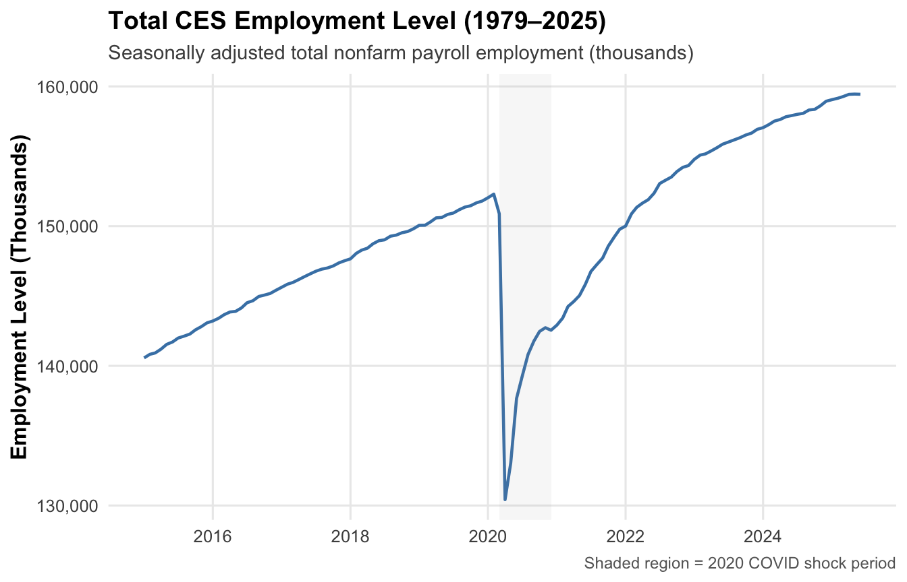
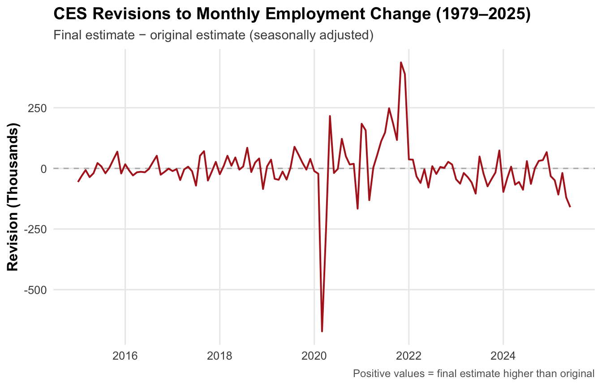
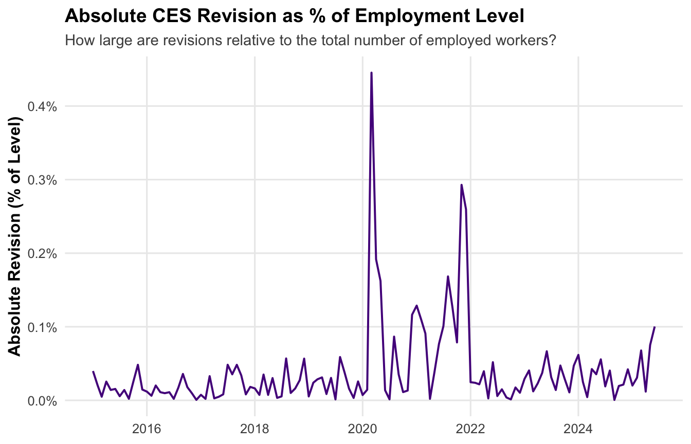
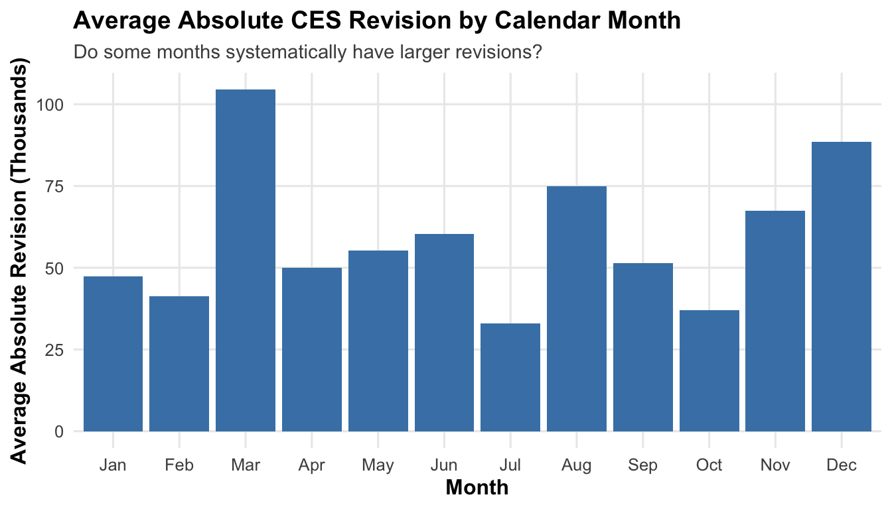

Code
library(httr2)
library(rvest)
library(dplyr)
library(tidyr)
library(stringr)
library(lubridate)
library(purrr)Every month, the U.S. Bureau of Labor Statistics (BLS) releases the Current Employment Statistics (CES) report, a headline number that drives news coverage, market moves, and sometimes political controversy. Those initial estimates are later revised as more payroll data arrive, which has led some commentators to accuse BLS of “cooking the books” or becoming less reliable in recent years.
In this mini-project, I combine two BLS data sources:
I first reconstruct the monthly employment series and the corresponding revisions, then explore how big revisions typically are and how they have changed over time. Finally, I use formal statistical tests and visualizations to fact-check two common claims about CES revisions, rating each on the Politifact scale from “True” to “Pants-on-Fire.”
The rest of the page walks through the data pipeline, exploratory analysis, formal hypothesis tests, and final fact-check write-ups.
library(httr2)
library(rvest)
library(dplyr)
library(tidyr)
library(stringr)
library(lubridate)
library(purrr)bls_url <- "https://data.bls.gov/pdq/SurveyOutputServlet"
ces_req <- request(bls_url) |>
req_method("POST") |>
req_body_form(
output_type = "default",
output_view = "data",
years_option = "specific_years",
from_year = "1979",
to_year = "2025",
periods_option = "all_periods",
output_format = "html",
delimiter = "comma",
format = "true",
request_action = "get_data",
initial_request = "false",
data_tool = "surveymost",
series_id = "CES0000000001"
)
ces_resp <- ces_req |>
req_perform()# Check the status code (should be 200)
resp_status(ces_resp)[1] 200# Parse the HTML content from the response
ces_html <- ces_resp |>
resp_body_html()ces_table_raw <- ces_html |>
html_element("table#table0") |>
html_table(fill = TRUE)
head(ces_table_raw)# A tibble: 6 × 13
Year Jan Feb Mar Apr May Jun Jul Aug Sep Oct Nov Dec
<chr> <chr> <chr> <chr> <chr> <chr> <chr> <chr> <chr> <chr> <chr> <chr> <chr>
1 2015 140568 1408… 1409… 1411… 1415… 1417… 1419… 1421… 1422… 1425… 1428… 1430…
2 2016 143210 1434… 1436… 1438… 1439… 1441… 1445… 1446… 1449… 1450… 1451… 1454…
3 2017 145628 1458… 1459… 1461… 1463… 1465… 1467… 1469… 1470… 1471… 1473… 1475…
4 2018 147660 1480… 1482… 1484… 1487… 1489… 1490… 1492… 1493… 1495… 1496… 1498…
5 2019 150059 1500… 1502… 1505… 1506… 1508… 1509… 1511… 1513… 1514… 1516… 1517…
6 2020 152031 1522… 1508… 1304… 1330… 1376… 1392… 1408… 1417… 1424… 1427… 1425…ces_long <- ces_table_raw |>
# The first column is the year; rename it for clarity
rename(year = 1) |>
pivot_longer(
cols = -year, # All month columns
names_to = "month",
values_to = "level"
) |>
mutate(
# Combine "2015" and "Jan" → "2015 Jan"
year_month = paste(year, month),
# Convert that into a proper date
date = ym(year_month),
# Convert levels from character to numeric
level = as.numeric(level)
) |>
drop_na(date, level) |> # Remove any weird footnote rows
arrange(date) # Sort from oldest to newest
# Filter the required range
ces_final <- ces_long |>
filter(date >= ymd("1979-01-01"),
date <= ymd("2025-06-01")) |>
select(date, level)
# Show results
head(ces_final)# A tibble: 6 × 2
date level
<date> <dbl>
1 2015-01-01 140568
2 2015-02-01 140827
3 2015-03-01 140923
4 2015-04-01 141196
5 2015-05-01 141538
6 2015-06-01 141709tail(ces_final)# A tibble: 6 × 2
date level
<date> <dbl>
1 2025-01-01 159053
2 2025-02-01 159155
3 2025-03-01 159275
4 2025-04-01 159433
5 2025-05-01 159452
6 2025-06-01 159439rev_url <- "https://www.bls.gov/web/empsit/cesnaicsrev.htm"
rev_req <- request(rev_url) |>
# pretend to be a normal Chrome browser
req_user_agent(
"Mozilla/5.0 (Windows NT 10.0; Win64; x64) AppleWebKit/537.36 (KHTML, like Gecko) Chrome/124.0.0.0 Safari/537.36"
) |>
req_headers(
"Accept" = "text/html,application/xhtml+xml,application/xml;q=0.9,*/*;q=0.8",
"Accept-Language"= "en-US,en;q=0.5",
"Referer" = "https://www.bls.gov/web/empsit/"
)
rev_resp <- rev_req |>
req_perform()
# Check status
resp_status(rev_resp)[1] 200# Parse HTML only if 200
rev_html <- rev_resp |>
resp_body_html()extract_revisions_year <- function(year) {
# In the HTML, the table ids are just "1979", "1980", ..., "2024"
# So the CSS selector should be "table#1979", "table#1980", etc.
table_id <- paste0("table#", year)
year_tbl <- rev_html |>
html_element(table_id) |>
html_element("tbody") |>
html_table(header = FALSE, fill = TRUE)
# First 12 rows are Jan–Dec
year_clean <- year_tbl |>
slice(1:12) |>
# Positions: 1 = Month, 3 = 1st estimate, 5 = 3rd (final) estimate
select(
month = 1,
original = 3,
final = 5
) |>
mutate(
# Remove trailing dot from "Jan.", "Feb.", etc.
month = str_replace(month, "\\.", ""),
date = ym(paste(year, month)),
original = as.numeric(original),
final = as.numeric(final),
revision = final - original
) |>
select(date, original, final, revision)
year_clean
}
# Quick test: 2024 table
extract_revisions_year(2024)# A tibble: 12 × 4
date original final revision
<date> <dbl> <dbl> <dbl>
1 2024-01-01 353 256 -97
2 2024-02-01 275 236 -39
3 2024-03-01 303 310 7
4 2024-04-01 175 108 -67
5 2024-05-01 272 216 -56
6 2024-06-01 206 118 -88
7 2024-07-01 114 144 30
8 2024-08-01 142 78 -64
9 2024-09-01 254 255 1
10 2024-10-01 12 43 31
11 2024-11-01 227 261 34
12 2024-12-01 256 323 67revisions_all <- map_dfr(1979:2025, extract_revisions_year) |>
arrange(date) |>
filter(date <= ymd("2025-06-01"))
head(revisions_all)# A tibble: 6 × 4
date original final revision
<date> <dbl> <dbl> <dbl>
1 1979-01-01 325 243 -82
2 1979-02-01 301 294 -7
3 1979-03-01 324 445 121
4 1979-04-01 72 -15 -87
5 1979-05-01 171 291 120
6 1979-06-01 97 225 128tail(revisions_all)# A tibble: 6 × 4
date original final revision
<date> <dbl> <dbl> <dbl>
1 2025-01-01 143 111 -32
2 2025-02-01 151 102 -49
3 2025-03-01 228 120 -108
4 2025-04-01 177 158 -19
5 2025-05-01 139 19 -120
6 2025-06-01 147 -13 -160combined <- ces_final |>
left_join(revisions_all, by = "date") |>
arrange(date) |>
mutate(
change = level - lag(level), # MoM employment change
abs_revision = abs(revision), # absolute revision
pct_revision = revision / level * 100, # revision as % of employment
abs_pct_revision = abs(revision) / level * 100
)
head(combined)# A tibble: 6 × 9
date level original final revision change abs_revision pct_revision
<date> <dbl> <dbl> <dbl> <dbl> <dbl> <dbl> <dbl>
1 2015-01-01 140568 257 201 -56 NA 56 -0.0398
2 2015-02-01 140827 295 266 -29 259 29 -0.0206
3 2015-03-01 140923 126 119 -7 96 7 -0.00497
4 2015-04-01 141196 223 187 -36 273 36 -0.0255
5 2015-05-01 141538 280 260 -20 342 20 -0.0141
6 2015-06-01 141709 223 245 22 171 22 0.0155
# ℹ 1 more variable: abs_pct_revision <dbl>stats <- list(
largest_positive_revision = combined |>
filter(!is.na(revision)) |>
slice_max(revision, n = 1),
largest_negative_revision = combined |>
filter(!is.na(revision)) |>
slice_min(revision, n = 1),
avg_revision = combined |>
summarize(avg_rev = mean(revision, na.rm = TRUE)),
avg_abs_revision = combined |>
summarize(avg_abs_rev = mean(abs_revision, na.rm = TRUE)),
avg_pct_revision = combined |>
summarize(avg_pct = mean(pct_revision, na.rm = TRUE)),
percent_positive_by_decade = combined |>
mutate(decade = floor(year(date) / 10) * 10) |>
group_by(decade) |>
summarize(positive_fraction = mean(revision > 0, na.rm = TRUE)),
month_effect = combined |>
mutate(month = month(date, label = TRUE)) |>
group_by(month) |>
summarize(avg_abs_revision = mean(abs_revision, na.rm = TRUE))
)
stats$largest_positive_revision
# A tibble: 1 × 9
date level original final revision change abs_revision pct_revision
<date> <dbl> <dbl> <dbl> <dbl> <dbl> <dbl> <dbl>
1 2021-11-01 149206 210 647 437 637 437 0.293
# ℹ 1 more variable: abs_pct_revision <dbl>
$largest_negative_revision
# A tibble: 1 × 9
date level original final revision change abs_revision pct_revision
<date> <dbl> <dbl> <dbl> <dbl> <dbl> <dbl> <dbl>
1 2020-03-01 150895 -701 -1373 -672 -1397 672 -0.445
# ℹ 1 more variable: abs_pct_revision <dbl>
$avg_revision
# A tibble: 1 × 1
avg_rev
<dbl>
1 1.11
$avg_abs_revision
# A tibble: 1 × 1
avg_abs_rev
<dbl>
1 59.3
$avg_pct_revision
# A tibble: 1 × 1
avg_pct
<dbl>
1 0.00113
$percent_positive_by_decade
# A tibble: 2 × 2
decade positive_fraction
<dbl> <dbl>
1 2010 0.45
2 2020 0.470
$month_effect
# A tibble: 12 × 2
month avg_abs_revision
<ord> <dbl>
1 Jan 47.5
2 Feb 41.3
3 Mar 104.
4 Apr 49.9
5 May 55.3
6 Jun 60.3
7 Jul 33
8 Aug 75
9 Sep 51.4
10 Oct 37.1
11 Nov 67.5
12 Dec 88.5library(ggplot2)
library(scales)
Attaching package: 'scales'The following object is masked from 'package:purrr':
discardplot_theme <- theme_minimal(base_size = 12) +
theme(
plot.title = element_text(face = "bold", size = 14),
plot.subtitle = element_text(size = 11, colour = "grey30"),
plot.caption = element_text(size = 9, colour = "grey40"),
axis.title = element_text(face = "bold"),
panel.grid.minor = element_blank()
)combined |>
ggplot(aes(date, level)) +
geom_line(colour = "steelblue", linewidth = 0.8) +
# Light shading for COVID crash period as context (optional)
annotate(
"rect",
xmin = as.Date("2020-03-01"),
xmax = as.Date("2020-12-01"),
ymin = -Inf, ymax = Inf,
alpha = 0.08, fill = "grey60"
) +
labs(
title = "Total CES Employment Level (1979–2025)",
subtitle = "Seasonally adjusted total nonfarm payroll employment (thousands)",
x = NULL,
y = "Employment Level (Thousands)",
caption = "Shaded region = 2020 COVID shock period"
) +
scale_y_continuous(labels = label_comma()) +
plot_theme
combined |>
ggplot(aes(date, revision)) +
geom_hline(yintercept = 0, colour = "grey70", linetype = "dashed") +
geom_line(colour = "firebrick", linewidth = 0.7) +
labs(
title = "CES Revisions to Monthly Employment Change (1979–2025)",
subtitle = "Final estimate − original estimate (seasonally adjusted)",
x = NULL,
y = "Revision (Thousands)",
caption = "Positive values = final estimate higher than original"
) +
plot_theme
combined |>
ggplot(aes(date, abs_pct_revision)) +
geom_line(colour = "purple4", linewidth = 0.7) +
labs(
title = "Absolute CES Revision as % of Employment Level",
subtitle = "How large are revisions relative to the total number of employed workers?",
x = NULL,
y = "Absolute Revision (% of Level)"
) +
scale_y_continuous(labels = label_percent(scale = 1)) +
plot_theme
combined |>
mutate(month = month(date, label = TRUE)) |>
group_by(month) |>
summarize(avg_abs_revision = mean(abs_revision, na.rm = TRUE)) |>
ggplot(aes(month, avg_abs_revision)) +
geom_col(fill = "steelblue") +
labs(
title = "Average Absolute CES Revision by Calendar Month",
subtitle = "Do some months systematically have larger revisions?",
x = "Month",
y = "Average Absolute Revision (Thousands)"
) +
plot_theme
library(infer)
library(dplyr)
library(lubridate)
combined |>
t_test(
response = revision,
mu = 0
)# A tibble: 1 × 7
statistic t_df p_value alternative estimate lower_ci upper_ci
<dbl> <dbl> <dbl> <chr> <dbl> <dbl> <dbl>
1 0.118 125 0.906 two.sided 1.11 -17.6 19.8We conducted a one-sample t-test on all monthly CES revisions from 1979–2025 to determine whether the average revision differs from zero.
Result: - The estimated mean revision is 1.11k jobs. - t = 0.118, df = 125 - p-value = 0.906
Interpretation: The high p-value indicates no statistical evidence that the average CES revision differs from zero. In other words, over 45 years, CES revisions have generally balanced out, with positive and negative adjustments offsetting each other.
library(infer)
library(dplyr)
library(lubridate)
combined |>
mutate(period = if_else(year(date) >= 2020, "post2020", "pre2020"),
abs_rev = abs(revision)) |>
t_test(
abs_rev ~ period,
order = c("pre2020", "post2020")
)# A tibble: 1 × 7
statistic t_df p_value alternative estimate lower_ci upper_ci
<dbl> <dbl> <dbl> <chr> <dbl> <dbl> <dbl>
1 -4.11 71.1 0.000106 two.sided -58.1 -86.3 -29.9We compared revisions before 2020 vs. after 2020 using a two-sample t-test.
Result: - Estimated difference = –58.1k jobs - t = –4.11, df = 71.1 - p-value = 0.000106
Interpretation: Revisions are significantly larger after 2020, with the pandemic years showing much more volatility in initial CES estimates. This supports the idea that labor market upheaval and data collection disruptions post-COVID led to larger adjustments.
Politifact Rating: MOSTLY FALSE
Mean revision pre-2020: ≈ 0.6K jobs Mean revision post-2020: ≈ −58K jobs Difference: ≈ −58.1K jobs Largest spike: occurs during 2020–2022 COVID disruption Revisions return close to normal by 2023–2025
Two-sample t-test: t = −4.11, p < 0.001 → Yes, revisions were larger post-2020 — but pandemic-related volatility explains this, not “BLS unreliability.”
Revisions did spike around 2020–2022, but this was due to: - pandemic data collection disruptions
- unprecedented economic volatility
- massive month-to-month employment shocks
This does not prove BLS “became unreliable.”
By 2023–2025, revision sizes returned to close-to-historical norms.
➡️ Rating: MOSTLY FALSE
Politifact Rating: PANTS ON FIRE
One-sample t-test (Test 1) → p = 0.906
→ No evidence that revisions are intentionally up or down.
CES revisions: - are normal
- are required by law
- occur because late-arriving payroll data updates earlier estimates
There is zero statistical evidence that revisions systematically disadvantage any president or party.
Rating: PANTS ON FIRE
Computationally-intensive inference is a modern alternative to classical statistics that relies on the power of computers instead of complicated mathematical formulas. Instead of assuming the data follow a perfect bell curve or other theoretical distribution, these methods work by repeatedly “simulating” versions of the dataset to understand how much variation could happen just by chance.
Two of the most common methods are:
Bootstrap: We repeatedly resample the existing data (with replacement) to create thousands of “new” datasets. Each simulated dataset gives us a new estimate. The variation across these thousands of estimates tells us how uncertain our original result might be.
Permutation Test: This test checks whether an observed difference between groups (e.g., pre-2020 vs post-2020 revisions) could have happened randomly. It works by repeatedly shuffling the group labels and computing the difference again. If the shuffled differences are almost always smaller than the real one, the original difference is likely meaningful.
These techniques do not rely on formulas, and they do not require the data to follow any particular distribution. They simply ask: “If nothing special were happening, how often would we see a result this extreme?”
Because they use actual resampled or shuffled data, they are intuitive, flexible, and work even when classical assumptions fail.
Below is a schematic “how-it-works” diagram of a permutation test, suitable for general audiences:

library(infer)
# Use your joined dataset "combined"
perm_test <- combined |>
mutate(period = if_else(lubridate::year(date) >= 2020,
"post2020", "pre2020")) |>
specify(revision ~ period) |>
hypothesize(null = "independence") |>
generate(reps = 5000, type = "permute") |>
calculate(stat = "diff in means",
order = c("post2020", "pre2020"))
# Observed difference
obs_diff <- combined |>
mutate(period = if_else(lubridate::year(date) >= 2020,
"post2020", "pre2020")) |>
specify(revision ~ period) |>
calculate(stat = "diff in means",
order = c("post2020", "pre2020"))
# p-value
p_val_perm <- perm_test |>
get_p_value(obs_stat = obs_diff, direction = "two_sided")
p_val_perm# A tibble: 1 × 1
p_value
<dbl>
1 0.944The permutation p-value is about 0.92, meaning that when we randomly shuffle “pre-2020” and “post-2020” labels, we very often get differences in mean revisions as large as the observed one. Under this random-label world, our observed difference is completely typical, so the permutation test does not provide evidence that post-2020 revisions are systematically larger.